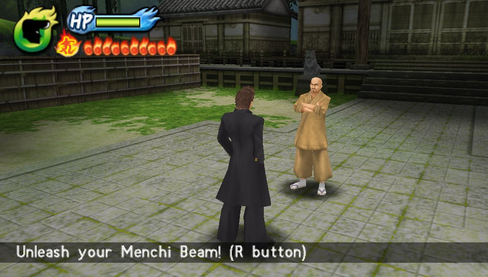
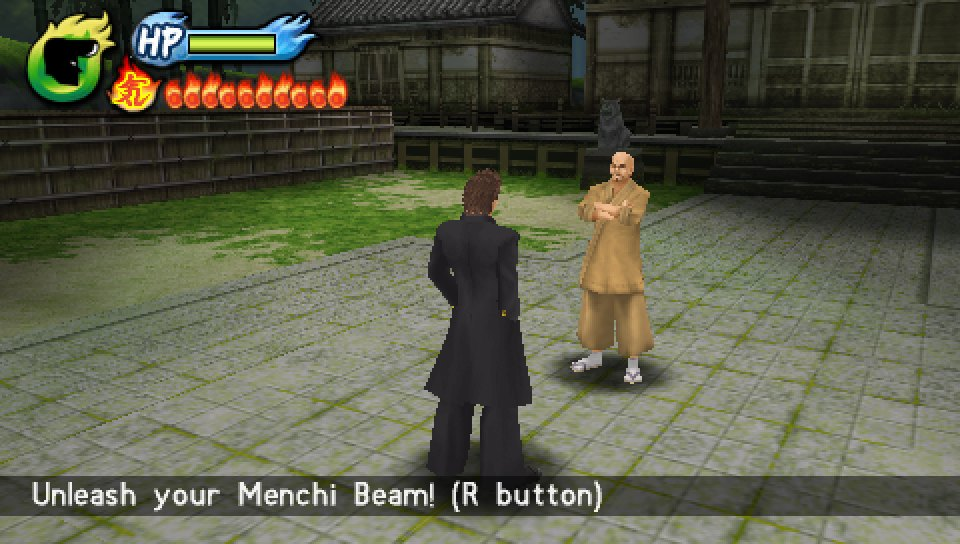

1
Download the plugin
One file, from the newest release on GitHub. Back up your saves first.
NativeRes is a plugin for Adrenaline. The Vita's own GPU draws each PSP game at 960×544, where the emulator shows a 480×272 picture scaled up.


The PSP emulator inside the Vita renders 480×272 and scales it up. NativeRes leaves that emulation untouched and draws every frame a second time, natively, at 960×544 in 32-bit color.
One file, from the newest release on GitHub. Back up your saves first.
Put the file in the taiHEN folder, with VitaShell for example.
ur0:tai/ adrenaline-native-res.suprx
Two lines in ur0:tai/config.txt. It loads only inside Adrenaline.
*PSPEMUCFW ur0:tai/adrenaline-native-res.suprx
The renderer is on from the first start. Switch it in Adrenaline's settings.
Settings NativeRes Renderer On